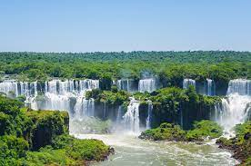
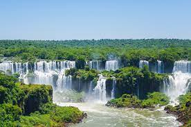

La Patagonia chubutense es una tierra de contrastes geográficos. Acantilados blancos al este, áridas mesetas en el centro, y montañas boscosas al oeste. La ruta nacional 25 une las ciudades de Rawson y Tecka, atravesando la provincia y pueblitos diminutos. Poco se parece a la ruta 152, en La Pampa, o a la 22, en Rio Negro, las cuales también atraviesan la Patagonia de este a oeste. La ruta 25 corre junto al Río Chubut y, en su tramo central (cerca de Los Altares), deja ver paredes de piedra y geoformas que, en algunos tramos, poco tienen que envidiarle al Talampaya.
 


CLICK PARA FOTO SIGUIENTE->